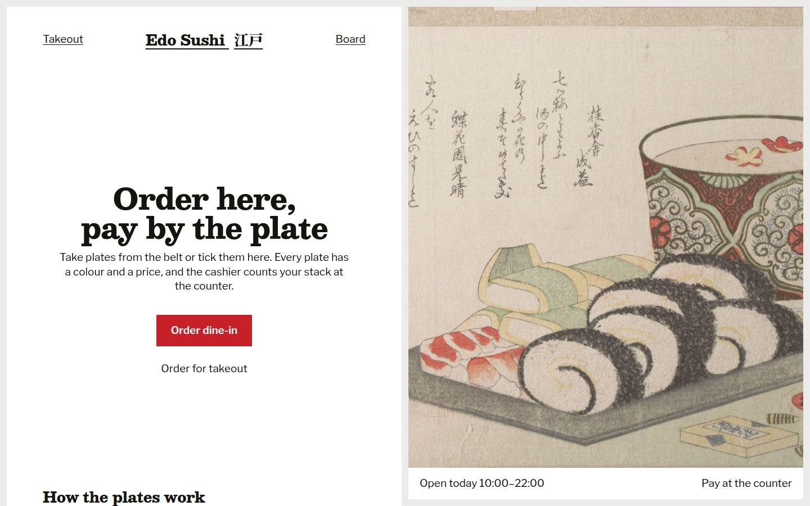
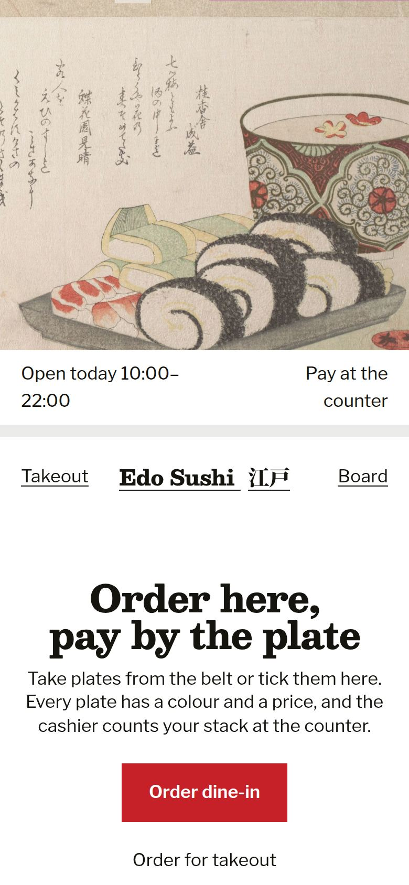

Pay by the plate
The stack of coloured plates, the kaiten bill counted by colour at the end, is the whole interface. Every item is a plate of one colour, the slip is your stack, and the cashier screen shows the stack beside the table number.
Start the walkthroughClick the picture to step through the screens, or pick one from the strip. Every screen opens in the live app from its note.


Every screen on a phone
The phone is its own composition: the picture first, then the sheet slides over it; the stack becomes a bar at the bottom of the belt.